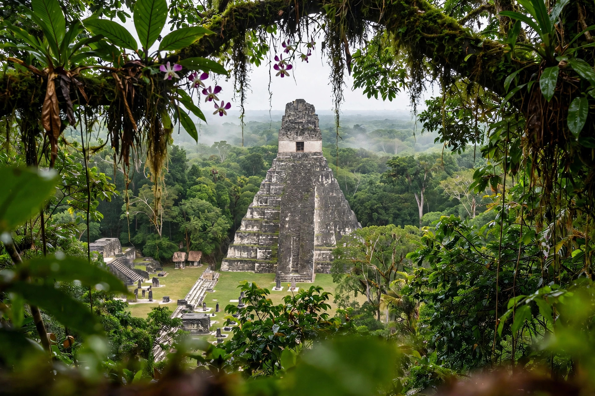

Tikal National Park
Tikal National Park is a national park in the Petén department of northern Guatemala, protecting the ruins of Tikal, one of the largest and most powerful cities of the ancient Maya civilisation. Created in 1955 and inscribed as a UNESCO World Heritage Site in 1979 — among UNESCO's first, for both cultural and natural criteria — the park covers about 575 square kilometres of rainforest within the Maya Biosphere Reserve.
| Location | Petén, Guatemala |
|---|---|
| Area | about 576 km² |
| Established | 26 May 1955 |
| UNESCO | World Heritage Site, 1979 |
| Nearest town | Flores |

The archaeological site
Tikal was inhabited from about the 4th century BC and reached its height in the Classic period (c. 200–900 AD), when it dominated much of the Maya lowlands and warred with rival Calakmul. Thousands of structures survive, including the Great Plaza flanked by Temple I and Temple II, the North Acropolis, the Central Acropolis, the Mundo Perdido complex and Temple IV — at about 70 m one of the tallest pre-Columbian structures in the Americas. The city declined and was abandoned by around the 10th century.
Nature
The park protects tropical forest home to jaguars, pumas, howler and spider monkeys, ocellated turkeys, toucans and hundreds of other bird species, as well as ceiba and mahogany trees.
Access and in popular culture
Visitors usually stay in Flores or at lodges near the park entrance, about 65 km away. Tikal's Great Plaza appeared as the rebel base on Yavin 4 in the 1977 film Star Wars.